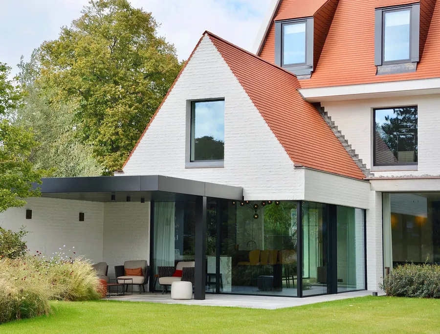
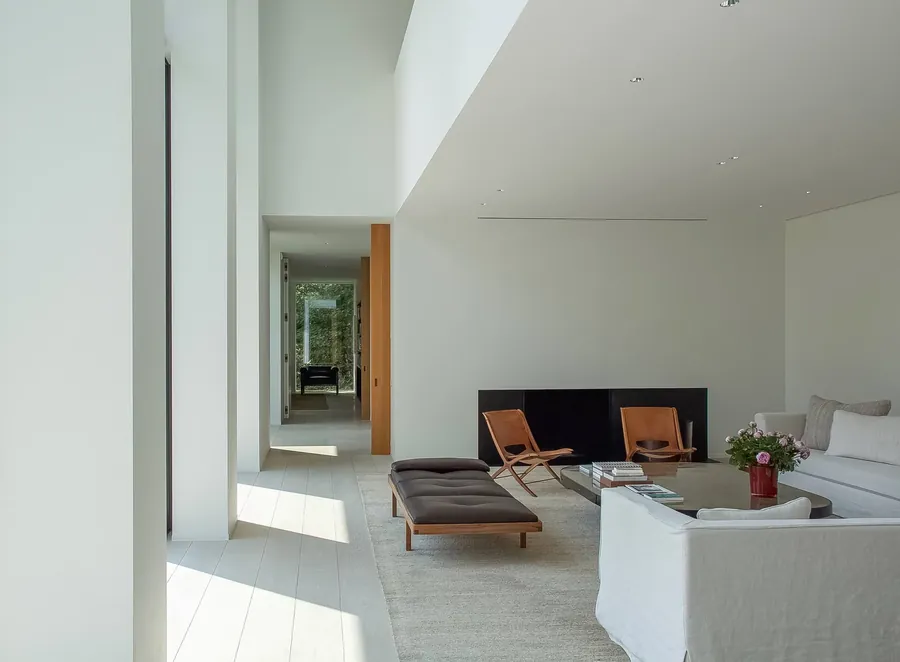

Een huis met zicht. Rivier, riet en wijde velden komen tot binnen.
Ik ben Dirk Heveraet. Sinds 1981 ontwerp ik villa's en privéwoningen, van een strakke woning aan het water tot een klassieke villa in een oude tuin. Elk huis begint bij mij met een potlood, een penseel en de plek zelf.


Ik ontwerp geen huizen uit een catalogus. Een villa in het Zoute vraagt iets anders dan een paviljoen in het bos of een stenen huis aan de Middellandse Zee. Licht, zicht en de grond waarop het staat bepalen de vorm.
Daarom teken en schilder ik nog altijd met de hand. Zo ziet u al vroeg hoe uw huis zal voelen, niet alleen hoe het eruitziet.
Een huis met zicht. Rivier, riet en wijde velden komen tot binnen.

Een glazen paviljoen in het groen, met de tuin als muur.

Witte gevels, rode pannen en een tuin rond het zwembad.

Rust, symmetrie en materialen die mooi ouder worden.

Witte volumes, een binnenzwembad en de tuin als schilderij.

Oude steen, kasseien en een dak dat laag in het landschap ligt.

Een nieuwe villa in natuursteen, gebouwd in het licht van het eiland.

Cipressen, rots en een zwembad dat in de zee lijkt over te lopen.

Luiken, klimplanten en een gevel die het hele jaar rust uitstraalt.

Hedendaags, maar met de steile rode daken die je aan de kust verwacht. Grote glazen puien openen de leefruimte naar het terras en het zwembad.


Veel van mijn ontwerpen beginnen als aquarel, lang voor er een plan op de computer staat. Met water en kleur in plaats van lijnen en maten. Zo voelt u meteen of de sfeer klopt: het licht in de tuin, de kleur van de gevel, hoe het huis in zijn omgeving staat.
Naast architect ben ik ook schilder. Mijn werk hing onder meer in Leuven en Brussel.
 Villa met tuin
Villa met tuin Een eerste sfeerbeeld
Een eerste sfeerbeeld De binnentuin
De binnentuin Voor de eerste lijn
Voor de eerste lijnGeboren in Roeselare, opgeleid in Gent en al ruim veertig jaar aan het werk als architect. Ik woon en werk in Linden, deelgemeente van Lubbeek, en in Olbia op Sardinië. Twee landschappen die elk op hun manier mijn werk kleuren.
 Sardinië
Sardinië Schilderwerk
SchilderwerkWe wandelen samen over de grond of door de woning. Waar valt het licht, wat ziet u, wat wilt u net niet zien.
Schetsen en aquarellen die tonen hoe het huis zal voelen. U reageert, ik pas aan.
Het ontwerp wordt een volledig dossier, tot in de details van ramen, steen en hout.
Tijdens de bouw blijf ik betrokken, zodat wat we samen tekenden ook echt zo gebouwd wordt.

Wie met mij bouwde, geeft op Google een perfecte score. Dat zegt meer dan elke folder.
Graag. Ik woon en werk in Linden. Een project in de buurt van Leuven of Lubbeek is voor mij net zo boeiend als een villa aan zee.
Het schilderen hoort bij mijn manier van werken. Vraag er gerust naar in het eerste gesprek.
Ja. Ik ontwierp woningen in Nederland, Duitsland, Spanje en Italië, en ik ben vaak op Sardinië.
Voor allebei. Het werk gaat van strakke witte volumes tot klassieke villa's en landelijke woningen. De plek en uw manier van leven beslissen, niet een vaste stijl.
Stuur me een berichtje of bel. Vertel waar uw grond of woning ligt en wat u voor ogen hebt. Dan spreken we af, liefst ter plaatse.
Vertel me waar u wil bouwen of wat u wil veranderen. Ik kom graag kijken.
Een eerste schets, op maat van Dirk Heveraet Architecture. U kiest de stijl, ik zorg dat alles klopt.
één keer, alles inbegrepen
Geen voorschot. U betaalt pas als de site klaar is.
Hosting en domein op uw naam. Een aanpassing vraagt u per keer aan.
Hosting en domein inbegrepen. Nieuwe acties, verlofdagen en wijzigingen zet ik er voor u op.
mijn aanraderStijn Vranken · 0496 25 14 45 · info@digital-impression.be